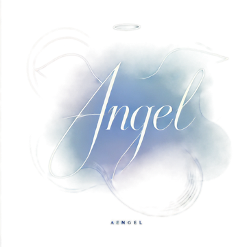

密碼強度檢查
即時評估密碼有多耐打、附破解時間估算與改善建議。
CISSP 觀點：怎麼想「密碼強度」這件事
長度比複雜度重要。「P@ssw0rd!」看起來複雜、其實是攻擊字典裡的常客；「藍色腳踏車在屋頂唱歌」這種長句子反而難猜。每多一個字元、攻擊者要嘗試的組合就是指數成長——複雜度規則只是線性增加難度、長度才是指數級的。
美國 NIST SP 800-63B 已不建議「定期強制換密碼」。研究發現、被迫定期更換時、多數人只會做可預測的小改動（Password1 → Password2）、整體安全反而下降。新的建議是：用長密碼、不重複使用、只有在懷疑外洩時才更換。
Passphrase（通關密語）是普通人最實用的策略。挑四五個彼此無關的詞組成一句話、長度自然超過 20 字元、好記又難猜。搭配密碼管理器、每個網站用不同密碼、才是治本。
密碼之後：MFA、無密碼與零信任
再強的密碼、也只是「單一一道門」。密碼強度解決的是「被猜出來」的問題；但現實中密碼更常是被「釣走」或「外洩」的——你打得再長、輸進釣魚網站就直接送給攻擊者了。所以資安界的共識是：密碼之上要再加層、最終目標是讓密碼退場。
MFA（Multi-Factor Authentication、多因素驗證）：第二道門。把「你知道的」（密碼）加上「你擁有的」（手機、實體金鑰）或「你本身」（指紋、臉）。就算密碼外洩、攻擊者沒有你的第二因素照樣進不來。但要知道：簡訊 OTP 是最弱的一種（可被 SIM 卡劫持與釣魚轉發）、驗證 App 好一些、FIDO2 實體金鑰／Passkey 最強——因為它會驗證網站身分、釣魚網站騙不到它。順序記住：能用 Passkey 就不用 App、能用 App 就不用簡訊、但有簡訊仍遠勝什麼都沒有。
無密碼驗證（Passwordless）：讓密碼直接退場。Passkey 用公開金鑰密碼學取代密碼：你的裝置保管私鑰、網站只存公鑰——網站被駭也沒有密碼可外洩、釣魚網站因為網域不對拿不到簽章。蘋果、Google、微軟都已支援、許多大型網站可以直接「用 Face ID／指紋登入」。如果你常用的服務支援 Passkey、開起來、那一個帳號就從此告別密碼問題。
零信任（Zero Trust）：連「登入過」都不再無條件信任。傳統思維是城堡護城河——進了門就都信任；零信任的原則是「永不信任、持續驗證」：每一次存取都重新看「你是誰、用什麼裝置、從哪裡來、要拿什麼」、而不是看你在不在內網。對個人的啟示很實際：別因為「這是家裡電腦」就鬆懈、每個帳號獨立密碼＋MFA、敏感操作要求再次驗證、裝置保持更新——你自己就能實踐零信任的精神。
現在就開：常用服務的啟用入口
讀完不動手等於沒讀。挑你最常用的開始、每個大概 3 分鐘：
- Google／Gmail：兩步驟驗證設定頁（登入後直達）｜官方說明｜進階：改用 Passkey 登入
- Facebook：帳號中心 → 密碼和帳號安全（雙重驗證在這裡開）｜官方說明
- Instagram：帳號中心 → 密碼和帳號安全（和 FB 同一個帳號中心）｜官方說明
小提醒：開啟時優先選「驗證應用程式」或 Passkey、簡訊留作備援就好；記得把備援碼（backup codes）存進密碼管理器、手機掉了才救得回來。
換頂帽子：如果你是開發者、密碼該怎麼「存」
前面幾節都站在「使用者」的立場——怎麼挑一個好密碼、怎麼用得安全。但如果你剛好也在寫系統、得替一整批使用者保管他們的密碼、那安全的責任就換到你頭上了。存密碼跟用密碼、是完全不同的兩門功課。
先問一個問題：能不能根本不要自己存密碼？最安全的密碼、是「你壓根沒保管的那一個」。能用第三方登入（Google、Microsoft、Apple、企業 AD）或標準的 SSO／OIDC 就別自己扛帳密——把這件高風險的事交給有專職團隊在顧的平台、是降低攻擊面、不是偷懶。
真的得自己存：明文和「可還原」都是紅線。明文存密碼、等於把每個使用者的鑰匙明著擺在資料庫；用 AES 這類「可解密」的加密也不行——金鑰一旦外洩就全部一次還原。有個一眼識破的判準：某網站按「忘記密碼」會把你原本的密碼原封不動寄回來、代表它根本沒做雜湊、快逃、別再用。正解只有一種——單向雜湊（hash）：存進去就回不去原文、之後只能拿使用者新輸入的密碼重算一次、再比對兩個雜湊值一不一樣。
雜湊要挑「慢的」——現階段首選 Argon2id。直覺以為雜湊越快越好、密碼儲存正好相反。SHA-256 這種通用雜湊為「快」而生、剛好被攻擊者拿去每秒暴力嘗試幾十億次。存密碼要用刻意很慢、還很吃記憶體的演算法（memory-hard、讓攻擊者的顯卡難以平行加速）。OWASP 現階段首選 Argon2id、建議起始參數為記憶體 19 MiB、迭代 2 次、平行度 1；記憶體吃緊的環境可退一步用 scrypt；受既有系統限制時 bcrypt 仍可接受（但注意它有 72 bytes 的長度上限）；只有在必須符合 FIPS 的場景才選 PBKDF2。別自己憑感覺硬調參數、一律以 OWASP 官方建議為準。
每個密碼配一份獨立隨機鹽、比對用固定時間。鹽（salt、建議 16 bytes 以上的隨機值）讓兩個剛好用相同密碼的人算出不一樣的雜湊、直接廢掉攻擊者預先算好的彩虹表；鹽和參數不是機密、可以和雜湊結果存在一起。驗證時務必用固定時間比對（constant-time compare）、而不是一般的字串相等判斷——否則回應的快慢會悄悄洩漏「你猜對了前幾個位元組」、被拿去做時序攻擊（timing attack）。